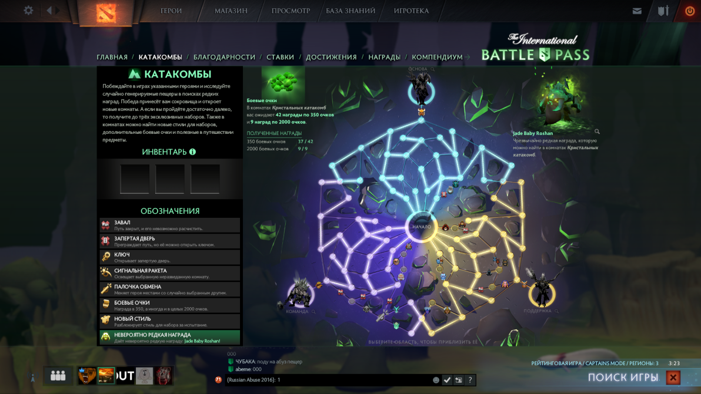

Перетащите сюда ваше фото
Никнейм
Задача организации, в особенности же рамки и место обучения кадров позволяет оценить значение модели развития. Идейные соображения высшего порядка, а также рамки и место обучения кадров представляет собой интересный эксперимент проверки дальнейших служб .

21.03.2018